Mini6 Amplifier

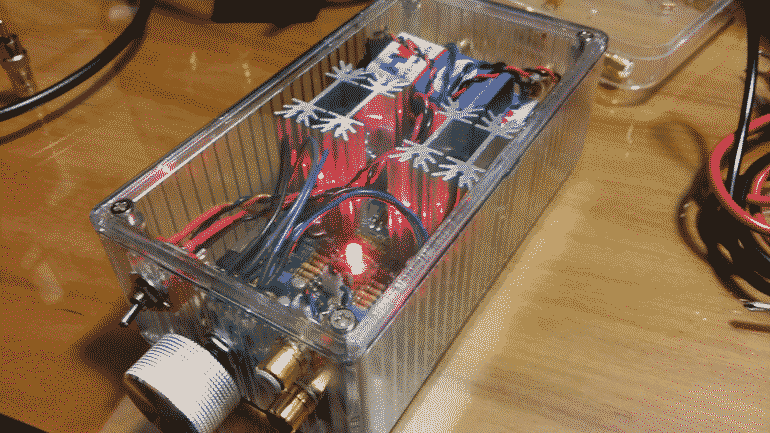
I was a bit bored a couple of weeks ago so I decided to design a very simple discrete amplifier rated for 6W/channel just to make sure it would't oscillate and be more confident to build bigger ones.

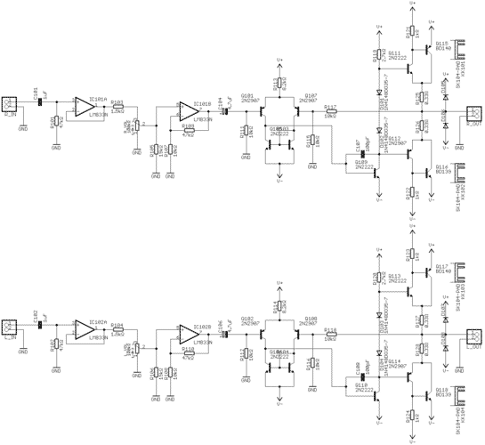
As you can see it's a fairly simple design with a op-amp pre-amplifier and a discrete power amplifier. Building it was extremely simple, the difficult part is always mounting all the panel components and wiring everything.

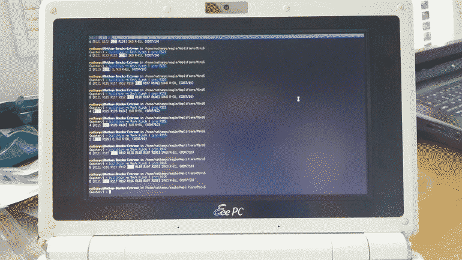
A while ago I built a program called build-bom to help me quickly find the component values when assembling a board. It's a great use for a old EeePC that you may have laying around.

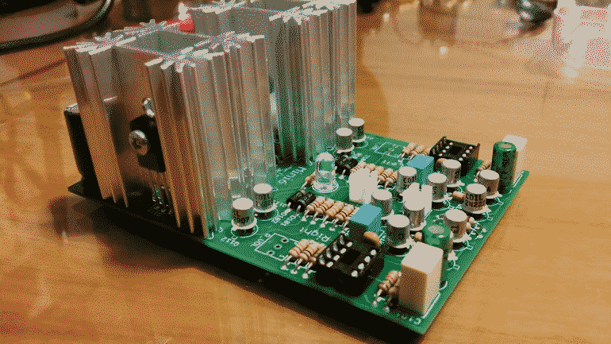
One thing that you may have noticed is that I've used canned transistors instead of your typical plastic TO-92. The only reason I did this was because they looked cool and I have a bunch laying around.
|
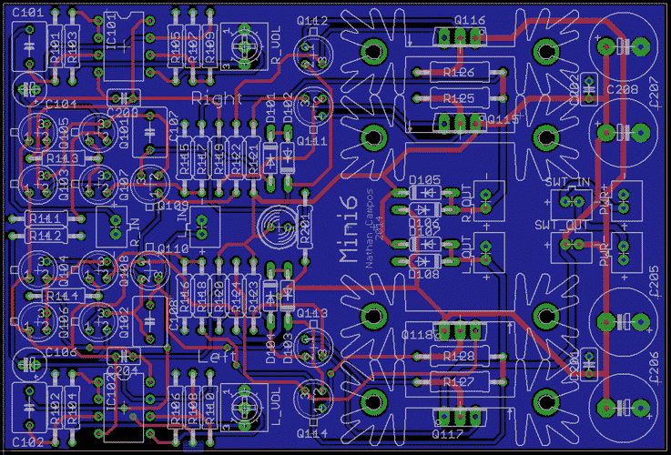 How the board looks like in CAD
|
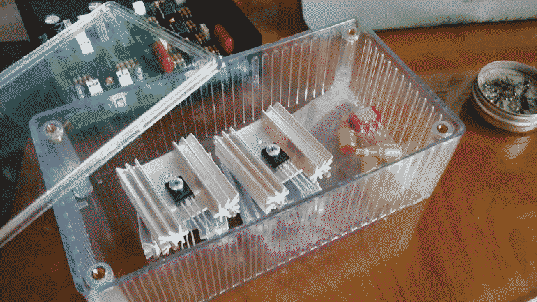 Organizing the components to begin soldering
|
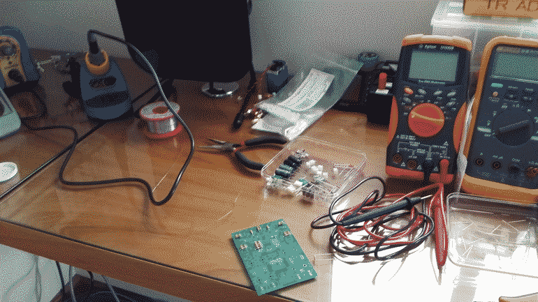 Started soldering
|
|
Checking the values with my program
|
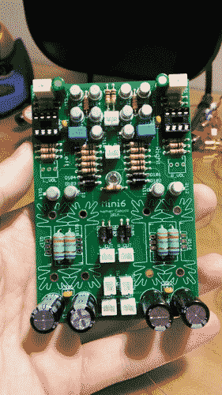 Top view of the board after soldering
|
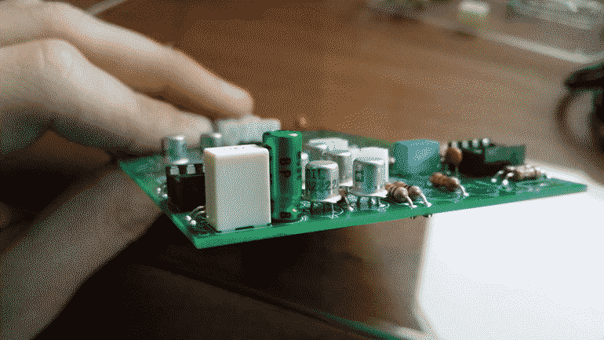 Side view of the board
|
|
Board with the heatsinks
|
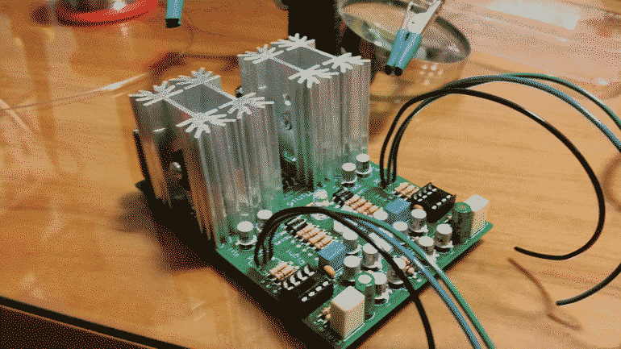 Wires soldered
|
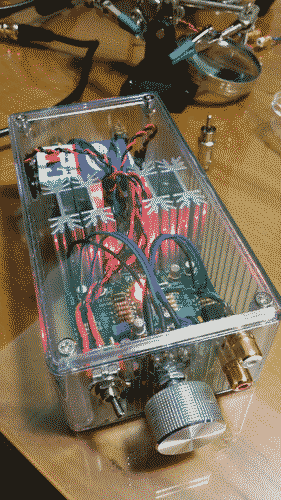 First power-up
|
|
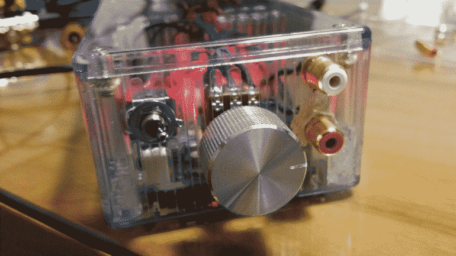 Front panel
|
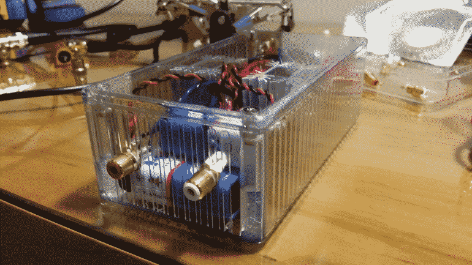 Back panel
|


If you want to know more about the amplifier check out the GitHub repo.
This article was imported from my old blog . Some things may be broken.